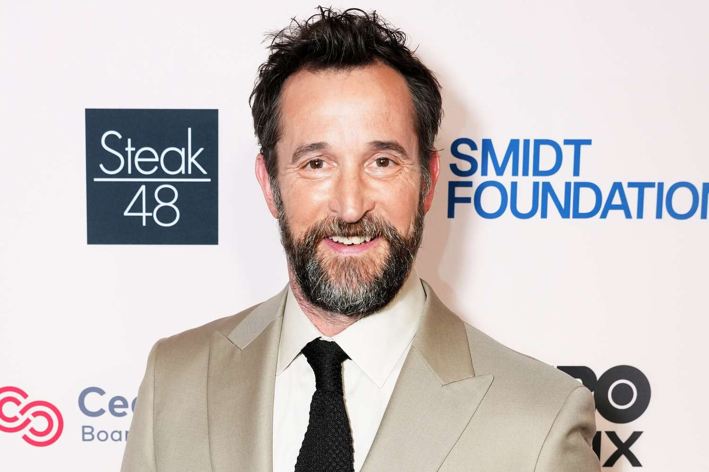
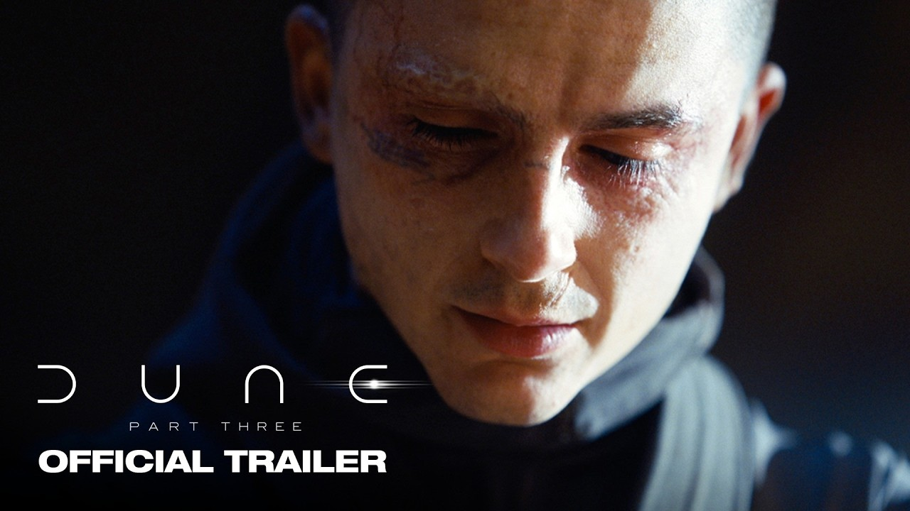
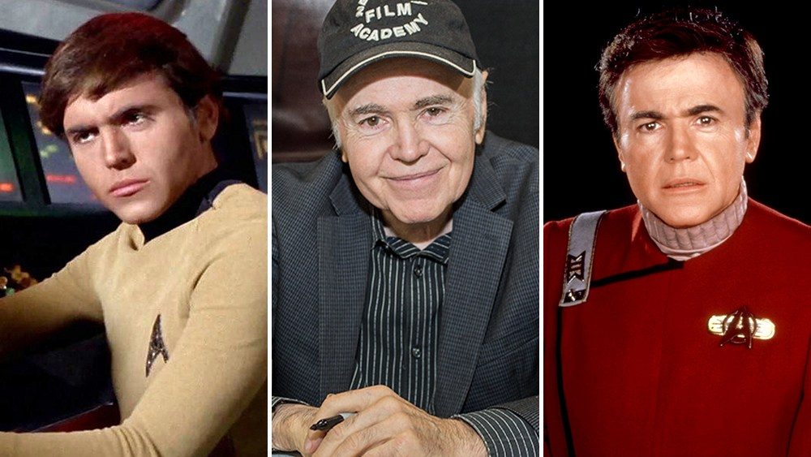
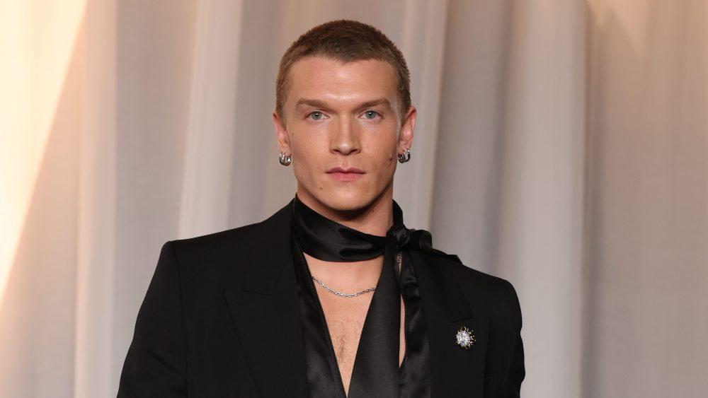

Noah Wyle is People’s 2026 Sexiest Man Alive

The 55-year-old star of HBO Max’s The Pitt got the title Tuesday and said it “sounded like a prank — just not in a million years did I think that this would be an honor bestowed on me.” He joked that he hopes it’s “wine and roses, milk and honey from here on out,” then admitted he’s mostly in for “a lot of ribbing from friends and family.” His wife, Sara Wells, talked him into accepting.
It caps a huge second act. Wyle won back-to-back lead actor Emmys for playing Dr. Michael “Robby” Robinavitch, plus a Golden Globe, three decades after ER made him a heartthrob. Former co-star George Clooney, a two-time winner, had joked in January that he’d nominate Wyle for “sexiest man still alive.” The Pitt Season 3 premieres in January, and Wyle succeeds last year’s pick, Jonathan Bailey.
The final Dune: Part Three trailer shows Paul as the tyrant he feared becoming

Warner Bros. released the last trailer for Denis Villeneuve’s trilogy closer on Tuesday, built around Paul’s line, “After years of combat, I’ve become the oppressor Chani had sworn to fight.” Adapted from Dune Messiah, it jumps nearly two decades ahead to Emperor Paul (Timothée Chalamet) facing an assassination plot with Chani (Zendaya) at the center of it.
New faces include Anya Taylor-Joy as Alia, Robert Pattinson as the scheming Scytale, and Jason Momoa’s son Nakoa-Wolf as Leto II. It opens December 18, the same day as Avengers: Doomsday, so the year’s biggest box-office showdown is now seven weeks away.
Walter Koenig, Star Trek’s original Chekov, dies at 90

Koenig died of natural causes at his North Hollywood home, surrounded by his daughter and niece. Born in Chicago in 1936, he joined Star Trek in its second season as Russian navigator Pavel Chekov, played him through the first seven films, and later turned villain as Psi Corps officer Alfred Bester on Babylon 5. His death comes during the franchise’s 60th anniversary and leaves George Takei and William Shatner as the last surviving main cast members of the original series.
Takei, whose wedding Koenig served as best man, wrote: “Rest well, my dear friend. Keep navigating a steady course.” On Tuesday Shatner admitted they weren’t close off set but praised a man who “was rarely content to remain behind a signing table” at conventions, preferring to be among the fans.
Heated Rivalry’s Connor Storrie is in talks to play the villain in Marvel’s Ghost Rider

Storrie, who went from waiting tables in Culver City to breakout star as hockey player Ilya Rozanov, is negotiating to face Ryan Gosling in Shawn Levy’s Ghost Rider, which Kevin Feige surprise-announced at Comic-Con this summer. It shoots in New York next year for a July 28, 2028 release. Marvel hasn’t said which Ghost Rider Gosling plays or which villain Storrie would be.
It’s another big step after his Emmy-nominated SNL hosting gig and a role opposite Billie Eilish in Sarah Polley’s The Bell Jar. Heated Rivalry Season 2 is filming now for HBO Max next spring. There’s no trailer yet, since the film hasn’t started shooting.
Bottom of the news
- Meghan, Duchess of Sussex, will star in the 2027 season of Australia’s Junior MasterChef.
- Sarah Snook will lead HBO’s limited-series reimagining of Hitchcock’s The Birds, from Watchmen’s Tom Spezialy and Harry Potter producer David Heyman.
- Chris Brown got an eight-month suspended sentence in London for the 2023 tequila-bottle nightclub attack.
- Macklemore opened his Free Palestine tour in Dublin with Hozier and Kneecap; Paris and London are next.
- Neil Young is suing a Trump campaign committee again for playing his song at an Ohio rally.
- Miranda Lambert made rare comments about her divorce from Blake Shelton on Ross Golan’s podcast.
- Bloomberg reports Universal Music Group held early talks with private equity firms about going private.
- Channel 4 shows, including Bella Ramsey’s Maya, will stream on Disney+ in the UK and Ireland next year.